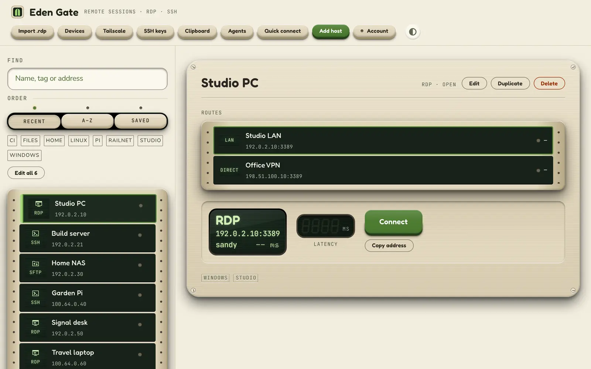
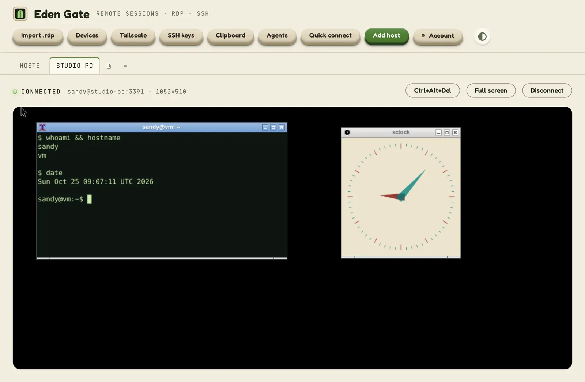
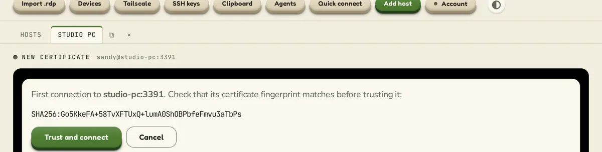

Terminals that remember
Host keys checked on first contact and pinned after, keys and passwords from your keychain, jump hosts and port tunnels.
Remote sessions · RDP · SSH · SFTP
Eden Gate keeps your Windows PCs, servers and file shares in one app. Copy in one session and paste in another, share a folder without exposing your computer, and keep every password end-to-end encrypted.
Windows and Mac · iPhone and Android in development

Built-in Remote Desktop
No separate Remote Desktop window to juggle. Eden Gate draws the remote screen itself.

Host keys checked on first contact and pinned after, keys and passwords from your keychain, jump hosts and port tunnels.
Browse, upload and download, or copy a folder straight from one server to another through this PC.
Copy on a remote PC, paste in a terminal, or the other way round. Each host can keep its data in, or others' out.
Show a folder on this PC to a remote PC as a drive, read-only unless you say so. It can never reach outside that folder.
Pick up the PCs on your network and your Tailscale tailnet, check which routes answer, and wake sleeping ones.
Hosts, passwords and keys follow you to your other devices, encrypted before they leave this one.
Let an AI assistant run commands on your machines through MCP, with your approval, limits and a log of every call.
Run a script before connecting (say, a VPN) and after; nothing runs until you have reviewed and approved it.
Security
A session manager holds the keys to everything you run. Eden Gate is built so a stolen server, a spoofed machine or a compromised remote PC gets as little as possible.

Platforms
Early access. Windows Hello unlock, Credential Manager for saved passwords.
Early access. Touch ID unlock, Keychain for saved passwords, Windows App as the Remote Desktop fallback.
In development: your hosts, SSH and SFTP, with the same vault.
In development: your hosts, SSH and SFTP, with the same vault.
Early access
Eden Gate is in early access for Windows and Mac. Write to us and we'll send you a build, and tell you when the phone apps are ready.